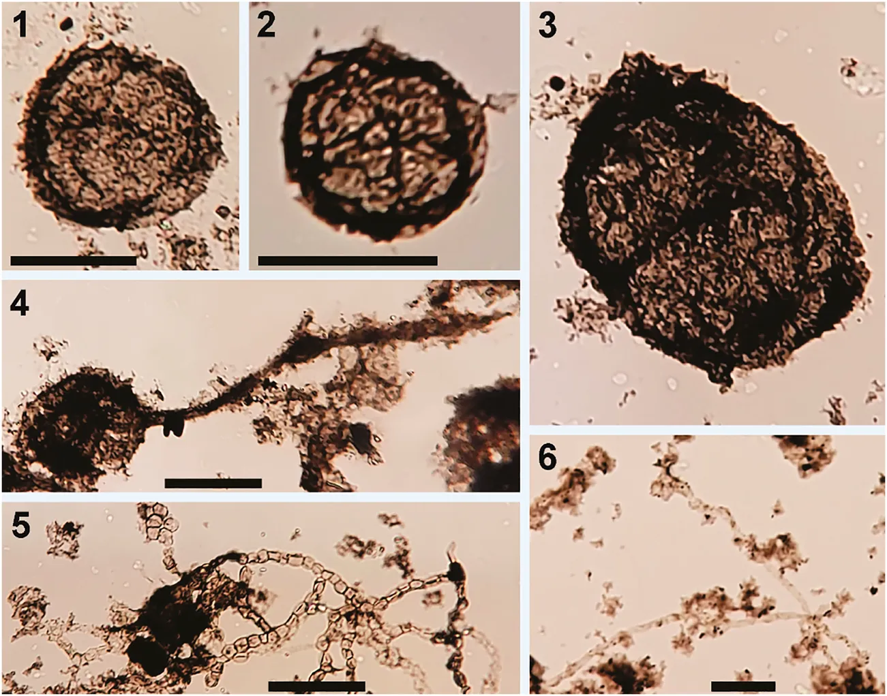

Methodological Development of a Combined Preparation for Micropaleontological and Sedimentological Studies of Samples from the Proterozoic Record

Resumo em Português
A recuperação de microfósseis de rochas Proterozoicas é comumente desafiadora devido ao metamorfismo. Neste estudo, é apresentada a aplicação de diferentes métodos usualmente empregados em rochas Fanerozóicas para testar a eficiência na recuperação de microfósseis de unidades Proterozoicas. Fatores químicos, físicos e biológicos podem influenciar a recuperação de microfósseis, tornando-se uma barreira para estudos bioestratigráficos e paleoecológicos. Além disso, projetos de baixo custo com quantidade reduzida de amostra coletada, como amostragem de testemunhos de sondagem, necessitam otimizar o tempo de preparação e a amostra necessária para diferentes análises.Para superar esse desafio, o procedimento clássico de preparação de microfósseis mineralizados, a técnica palinológica e o estudo da mineralogia de argilas com análise da alteração diagenética e busca por possíveis microfósseis em lâminas delgadas foram combinados. Três unidades litoestratigráficas Proterozoicas foram selecionadas para desenvolver um procedimento integrado de preparação de amostras para estudos micropaleontológicos e sedimentológicos: o Grupo Paranoá (Mesoproterozoico) e o Grupo Bambuí (Ediacarano-Cambriano), no Brasil, e o Grupo Nama (Ediacarano-Cambriano), na Namíbia.A recuperação de microfósseis individuais dos Grupos Paranoá e Bambuí tem sido um desafio para os paleontólogos, sendo a maioria dos estudos micropaleontológicos realizada como parte de análises de microbiofácies em lâminas delgadas. Todas as frações sedimentares foram estudadas para exame e triagem de microfósseis mineralizados. Três espécies foram recuperadas seguindo esse procedimento: Vetronostocale aff. V. amoenum Schopf and Blacic, 1971, Myxococcoides sp. e Melanocyrillium sp. As análises em amostras de rocha total de resíduos dos procedimentos com água (H₂O) e peróxido de hidrogênio 30% (H₂O₂) mostraram resultados similares aos do método padrão de preparação de argilo-minerais, sendo apresentados também protocolos detalhados para preparação de microfósseis de parede orgânica e ataques com ácidos acético e fórmico de baixa concentração para extração de microfósseis mineralizados.